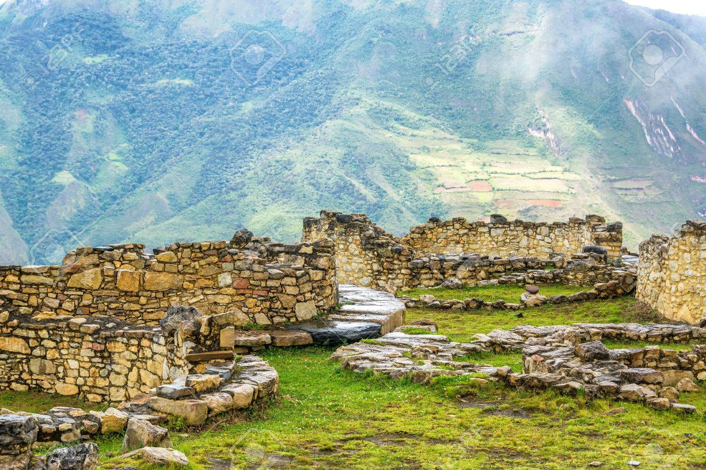
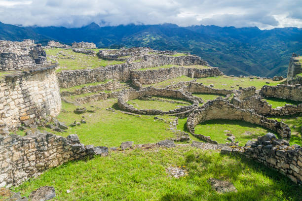
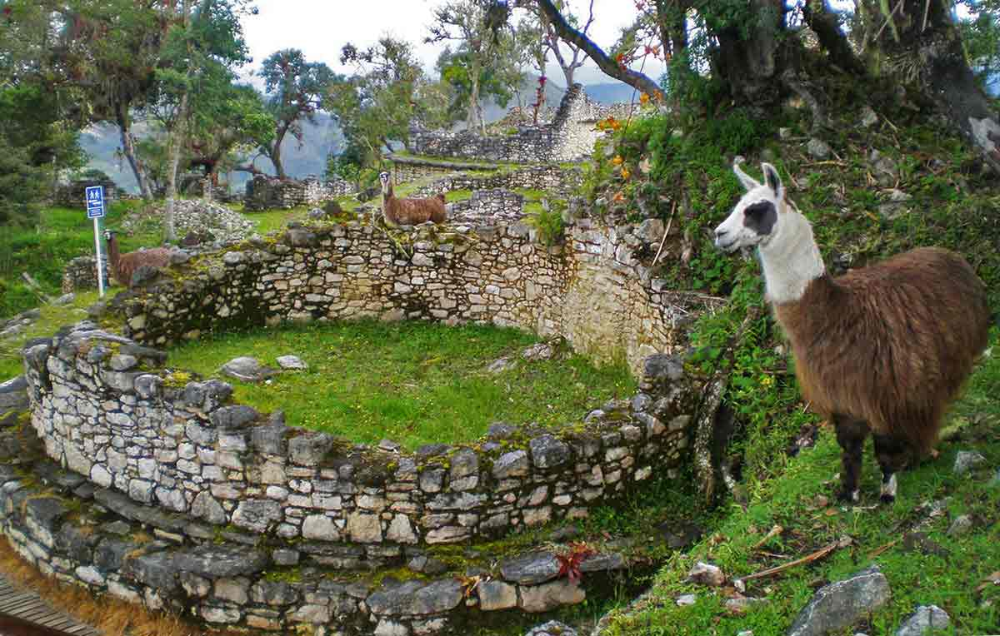
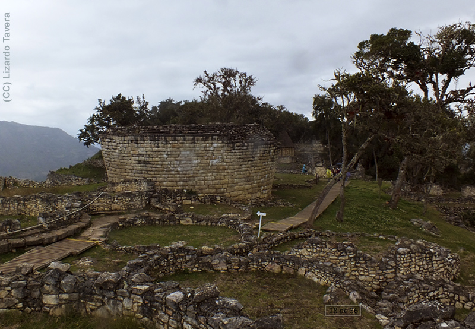

Kuelap es una antigua fortaleza preincaica ubicada en la región de Amazonas, Perú. Construida por la cultura Chachapoyas, esta impresionante estructura de piedra se encuentra en lo alto de una montaña y destaca por sus murallas masivas y arquitectura única. Kuelap es conocida como la “Machu Picchu del norte” y es uno de los sitios arqueológicos más importantes y enigmáticos del país.
Además de su valor histórico, Kuelap ofrece a los visitantes vistas espectaculares de la selva y los valles circundantes. Este destino permite explorar no solo ruinas antiguas, sino también la cultura y tradiciones de las comunidades amazónicas que todavía viven en la región. Es un lugar ideal para combinar aventura, historia y naturaleza.
   